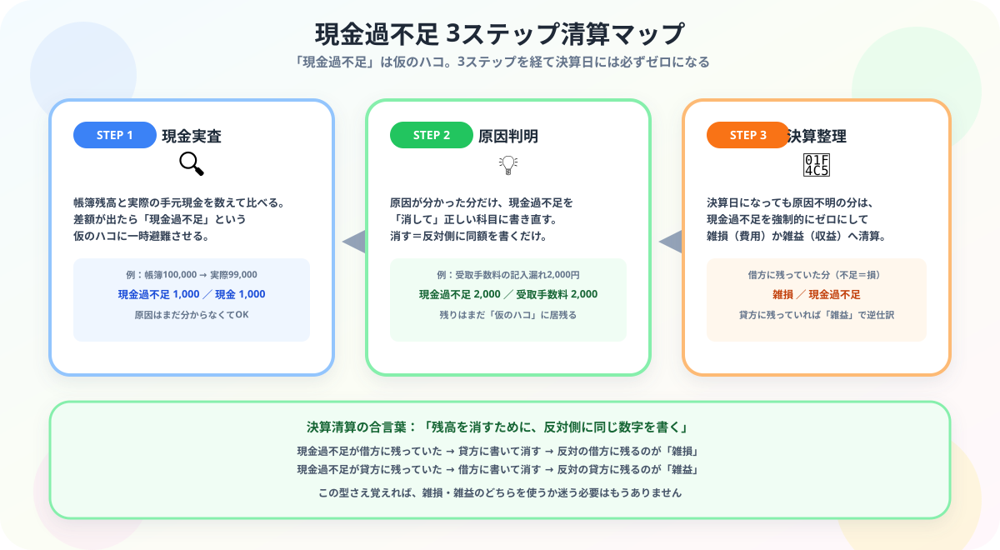

流れで覚える現金過不足の仕訳
雑損・雑益まで完全解説
- 現金過不足とは——帳簿残高と実際の現金が合わないときに使う一時的な仮勘定
- 処理の流れは3ステップ——「①実査時」「②原因判明時」「③決算整理時」で完結
- 雑損 vs 雑益の判断——原因不明で決算を迎えたとき、現金が不足なら雑損（費用）、超過なら雑益（収益）
- なぜ仮勘定を使うのか——原因確定前に費用/収益を計上しないことで帳簿の正確性を守るため
こんにちは、大谷です！
実は僕、大学の空き時間に居酒屋でアルバイトをしていて、閉店後に毎日レジの現金を数える係でした。レジの記録と、数えた実際の小銭・お札の金額が、たった1円合わないだけで「うわっ、なんじゃこりゃ……！どこかで絶対ミスってるのに、原因が全然わからん！」と本気で脳内パニックを起こしていました（笑）。
でも簿記を勉強して分かったんです。あの1円のズレは、犯人探しをその場でしなくていい——「現金過不足」という一時的な仮のハコにとりあえず放り込んでおいて、後で原因が分かったら正しい場所に移し替え、それでも決算日までに犯人が見つからなければ「雑損・雑益」として気持ちよく清算してしまえばいい、というゲームのルールだったんです。
今日は、当時レジの前で固まっていた僕の目線で、この【一時的な仮のハコと決算清算ストーリー】を一瞬で解けるようになるまで、一緒に攻略していきます！
また、記事の末尾のほうにある【いいねボタン】をポチッと押してもらえると、めちゃくちゃ嬉しいです！
現金過不足の3ステップ

「現金過不足」は仮の勘定科目です。上の3ステップで必ず最後はゼロになります。
相手は「現金過不足」
正しい科目に振替
雑損 or 雑益へ
STEP 1：現金実査で帳簿と金額が合わないときの仕訳
毎日（または定期的に）現金を数え（これを実査といいます）、帳簿残高と比較します。差額が出た場合は現金過不足という勘定科目で処理します。
帳簿の現金をプラスする。
相手科目は現金過不足（貸方）。
差額 ¥100
帳簿の現金をマイナスする。
相手科目は現金過不足（借方）。
差額 ¥1,000
手元の現金が帳簿より「多い」とき（実際有高 ＞ 帳簿残高）の仕訳
手元の現金が帳簿より「少ない」とき（実際有高 ＜ 帳簿残高）の仕訳
STEP 2：ズレの原因が判明したとき——仮勘定を正しい科目に振り替える
原因が判明したら、「現金過不足」を正しい科目に振り替えます。現金過不足を消して（反対側に書いて）、正しい科目を計上します。
現金過不足額￥10,000（貸方）のうち、￥2,000は受取手数料の記入漏れであることが判明した。
STEP 3：原因不明のまま期末を迎えたとき——雑損・雑益への振替
決算時点でまだ現金過不足が残っていたら、原因不明として雑損または雑益に振り替えます。
現金過不足を消した後、残った側が左（借方）→ 雑損（費用）、右（貸方）→ 雑益（収益）。
借方残高の現金過不足は「実際が少なかった（損した）」から雑損。貸方残高は「実際が多かった（得した）」から雑益。
「雑損」と「雑益」のどっち？——現金過不足が借方残のとき（現金不足）
現金過不足の残高は￥500（借方）である。原因不明のため適当な科目に振り替える。
現金過不足を使わずに決算で直接処理するパターン
期末の現金実際有高は￥300、帳簿残高は￥320である。差額は雑損又は雑益として処理する。
「雑益」になるとき——現金超過で一部原因判明・残額を雑益処理するパターン
現金の実際残高が帳簿残高より多かったため、現金過不足額（貸方）¥8,000で処理されていた。このうち¥6,000は受取手数料の記入漏れ、残額は原因不明のため適当な科目に振り替える。
なぜ「現金過不足」という仮勘定を使うのか？
現金のズレが見つかったとき、いきなり費用や収益に計上せず「現金過不足」という仮勘定を使う理由があります。
① 原因不明のまま費用や収益に計上 → 根拠のない費用・収益が帳簿に残り、帳簿の正確性・信頼性が損なわれる
② 後から原因が判明しても修正が複雑 → 「なぜこの費用があるのか」説明できない
③ ミスや不正の発見機会を失う → 現金管理の問題が見えなくなる
① 発生時は「現金過不足」に一時記録 → 「原因調査中」という状態を帳簿で表現できる
② 原因判明後に正しい科目へ振替 → 実態に合った正確な帳簿を維持できる
③ 決算日まで不明なら雑損（費用）or 雑益（収益）へ振替 → 決算書を必ず締め切れる（未処理で残さない）
「仮」はあくまで一時的！必ず最終的に別の科目へ振り替えます。
まとめ
📋 現金過不足 処理ルール一覧
現金過不足は「反対側に書いて消すだけ」のパズルです
レジの前でパニックになっていた居酒屋バイト時代の僕に教えてあげたい——1円のズレも、仮のハコに放り込んで、反対側に書いて消すだけで必ず片づく。この記事が「あ、そういうことか！」につながったら、僕の執筆のモチベーション維持のために、この下にある【いいねボタン】をポチッと押してもらえると、めちゃくちゃ嬉しいです！
Study Questで今日の学習時間を記録して、簿記3級マスターへの一歩を刻んでおきましょう。